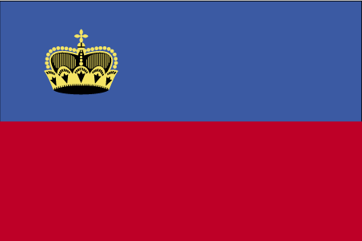
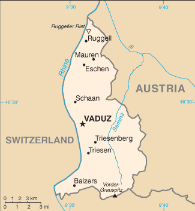
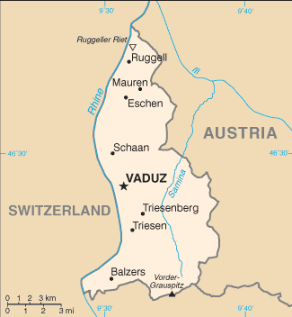
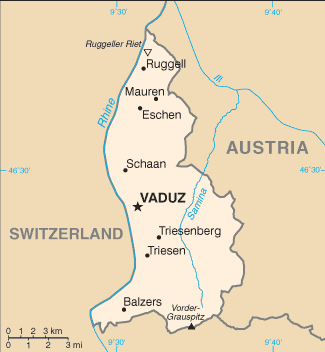

 


Europe :: LIECHTENSTEIN
Introduction :: LIECHTENSTEIN
-
The Principality of Liechtenstein was established within the Holy Roman Empire in 1719. Occupied by both French and Russian troops during the Napoleonic Wars, it became a sovereign state in 1806 and joined the Germanic Confederation in 1815. Liechtenstein became fully independent in 1866 when the Confederation dissolved. Until the end of World War I, it was closely tied to Austria, but the economic devastation caused by that conflict forced Liechtenstein to enter into a customs and monetary union with Switzerland. Since World War II (in which Liechtenstein remained neutral), the country's low taxes have spurred outstanding economic growth. In 2000, shortcomings in banking regulatory oversight resulted in concerns about the use of financial institutions for money laundering. However, Liechtenstein implemented anti-money laundering legislation and a Mutual Legal Assistance Treaty with the US that went into effect in 2003.
Geography :: LIECHTENSTEIN
-
Central Europe, between Austria and Switzerland47 16 N, 9 32 EEuropetotal: 160 sq kmland: 160 sq kmwater: 0 sq kmcountry comparison to the world: 219about 0.9 times the size of Washington, DCtotal: 75 kmborder countries (2): Austria 34 km, Switzerland 41 km0 km (doubly landlocked)none (landlocked)continental; cold, cloudy winters with frequent snow or rain; cool to moderately warm, cloudy, humid summersmostly mountainous (Alps) with Rhine Valley in western thirdmean elevation: NAelevation extremes: lowest point: Ruggeller Riet 430 mhighest point: Vorder-Grauspitz 2,599 mhydroelectric potential, arable landagricultural land: 37.6%arable land 18.8%; permanent crops 0%; permanent pasture 18.8%forest: 43.1%other: 19.3% (2011 est.)0 sq km (2012)most of the population is found in the western half of the country along the Rhine Riveravalanches, landslidessome air pollution generated locally, some transfered from surrounding countriesparty to: Air Pollution, Air Pollution-Nitrogen Oxides, Air Pollution-Persistent Organic Pollutants, Air Pollution-Sulfur 85, Air Pollution-Sulfur 94, Air Pollution-Volatile Organic Compounds, Biodiversity, Climate Change, Climate Change-Kyoto Protocol, Desertification, Endangered Species, Hazardous Wastes, Ozone Layer Protection, Wetlandssigned, but not ratified: Law of the Seaalong with Uzbekistan, one of only two doubly landlocked countries in the world; variety of microclimatic variations based on elevation
People and Society :: LIECHTENSTEIN
-
38,244 (July 2017 est.)country comparison to the world: 213noun: Liechtensteiner(s)adjective: LiechtensteinLiechtensteiner 66%, other 34% (2013 est.)German 94.5% (official) (Alemannic is the main dialect), Italian 1.1%, other 4.3% (2010 est.)Roman Catholic (official) 75.9%, Protestant Reformed 6.5%, Muslim 5.4%, Lutheran 1.3%, other 2.9%, none 5.4%, unspecified 2.6% (2010 est.)0-14 years: 15.26% (male 3,148/female 2,689)15-24 years: 11.65% (male 2,239/female 2,217)25-54 years: 41.64% (male 7,956/female 7,969)55-64 years: 14.03% (male 2,607/female 2,760)65 years and over: 17.41% (male 3,058/female 3,601) (2017 est.)total: 43.2 yearsmale: 41.7 yearsfemale: 44.5 years (2017 est.)country comparison to the world: 190.8% (2017 est.)country comparison to the world: 13310.4 births/1,000 population (2017 est.)country comparison to the world: 1887.4 deaths/1,000 population (2017 est.)country comparison to the world: 1165 migrant(s)/1,000 population (2017 est.)country comparison to the world: 25most of the population is found in the western half of the country along the Rhine Riverurban population: 14.3% of total population (2017)rate of urbanization: 0.79% annual rate of change (2015-20 est.)VADUZ (capital) 5,000 (2014)at birth: 1.26 male(s)/female0-14 years: 1.17 male(s)/female15-24 years: 0.99 male(s)/female25-54 years: 1 male(s)/female55-64 years: 0.95 male(s)/female65 years and over: 0.84 male(s)/femaletotal population: 0.99 male(s)/female (2016 est.)total: 4.2 deaths/1,000 live birthsmale: 4.5 deaths/1,000 live birthsfemale: 3.9 deaths/1,000 live births (2017 est.)country comparison to the world: 190total population: 81.9 yearsmale: 79.7 yearsfemale: 84.7 years (2017 est.)country comparison to the world: 191.69 children born/woman (2017 est.)country comparison to the world: 174NANANA2.6% of GDP (2011)country comparison to the world: 166total: 15 yearsmale: 16 yearsfemale: 13 years (2015)
Government :: LIECHTENSTEIN
-
conventional long form: Principality of Liechtensteinconventional short form: Liechtensteinlocal long form: Fuerstentum Liechtensteinlocal short form: Liechtensteinetymology: named after the Liechtenstein dynasty that purchased and united the counties of Schellenburg and Vaduz and that was allowed by the Holy Roman Emperor in 1719 to rename the new property after their family; the name in German means "light (bright) stone"constitutional monarchyname: Vaduzgeographic coordinates: 47 08 N, 9 31 Etime difference: UTC+1 (6 hours ahead of Washington, DC, during Standard Time)daylight saving time: +1hr, begins last Sunday in March; ends last Sunday in October11 communes (Gemeinden, singular - Gemeinde); Balzers, Eschen, Gamprin, Mauren, Planken, Ruggell, Schaan, Schellenberg, Triesen, Triesenberg, Vaduz23 January 1719 (Principality of Liechtenstein established); 12 July 1806 (independence from the Holy Roman Empire); 24 August 1866 (independence from the German Confederation)National Day, 15 August (1940); note - a National Day was originally established in 1940 to combine celebrations for the Feast of the Assumption (15 August) with those honoring the birthday of former Prince Franz Josef II (1906-1989) whose birth fell on 16 August; after the prince's death, National Day became the official national holiday by law in 1990history: previous 1862; latest adopted 5 October 1921amendments: proposed by Parliament, by the reigning prince (in the form of “Government” proposals), by petition of at least 1,500 qualified voters, or by at least four communes; passage requires unanimous approval of Parliament members in one sitting or three-quarters majority vote in two successive sittings; referendum required only if petitioned by at least 1,500 voters or by at least four communes; passage by referendum requires absolute majority of votes cast; amended several times, last in 2011 (2016)civil law system influenced by Swiss, Austrian, and German lawaccepts compulsory ICJ jurisdiction with reservations; accepts ICCt jurisdictioncitizenship by birth: nocitizenship by descent only: the father must be a citizen of Liechtenstein; in the case of a child born out of wedlock, the mother must be a citizendual citizenship recognized: noresidency requirement for naturalization: 5 years18 years of age; universalchief of state: Prince HANS-ADAM II (since 13 November 1989, assumed executive powers on 26 August 1984); Heir Apparent Prince ALOIS, son of the monarch (born 11 June 1968); note - on 15 August 2004, HANS-ADAM II transferred the official duties of the ruling prince to ALOIS, but HANS-ADAM II retains status of chief of statehead of government: Prime Minister Adrian HASLER (since 27 March 2013)cabinet: Cabinet elected by the Parliament, confirmed by the monarchelections/appointments: the monarchy is hereditary; following legislative elections, the leader of the majority party in the Parliament usually appointed the head of government by the monarch, and the leader of the largest minority party in the Landtag usually appointed the deputy head of government by the monarch if there is a coalition governmentdescription: unicameral Parliament or Landtag (25 seats; members directly elected in 2 multi-seat constituencies by proportional representation vote to serve 4-year terms)elections: last held on 5 February 2017 (next to be held in February 2021)election results: percent of vote by party - FBP 35.2%, VU 33.7%, DU 18.4% FL 12.6%; seats by party - FBP 9, VU 8, DU 5, FL 3highest court(s): Supreme Court or Oberster Gerichtshof (consists of 5 judges); Constitutional Court or Verfassungsgericht (consists of 5 judges and 5 alternates)judge selection and term of office: judges of both courts elected by the Landtag and appointed by the monarch; Supreme Court judges serve 4-year renewable terms; Constitutional Court judges appointed for renewable 5-year termssubordinate courts: Court of Appeal or Obergericht (second instance), Court of Justice (first instance), Administrative Court, county courtsFatherland Union (Vaterlaendische Union) or VU [Guenther FRITZ]Progressive Citizens' Party (Fortschrittliche Buergerpartei) or FBP [Thomas BANZER]The Free List (Die Freie Liste) or FL [Pepo FRICK]The Independents (Die Unabhaengigen) or DU [Harry QUADERER]CD, CE, EBRD, EFTA, IAEA, ICCt, ICRM, IFRCS, Interpol, IOC, IPU, ITSO, ITU, ITUC (NGOs), OAS (observer), OPCW, OSCE, PCA, Schengen Convention, UN, UNCTAD, UPU, WIPO, WTOchief of mission: Ambassador Kurt JAEGER (since 16 December 2016)chancery: 2900 K Street, NW, Suite 602B, Washington, DC 20007telephone: [1] (202) 331-0590FAX: [1] (202) 331-3221the US does not have an embassy in Liechtenstein; the US Ambassador to Switzerland is accredited to Liechtensteintwo equal horizontal bands of blue (top) and red with a gold crown on the hoist side of the blue band; the colors may derive from the blue and red livery design used in the principality's household in the 18th century; the prince's crown was introduced in 1937 to distinguish the flag from that of Haitiprincely hat (crown); national colors: blue, redname: "Oben am jungen Rhein" (High Above the Young Rhine)lyrics/music: Jakob Joseph JAUCH/Josef FROMMELTnote: adopted 1850, revised 1963; uses the tune of "God Save the Queen"
Economy :: LIECHTENSTEIN
-
Despite its small size and lack of natural resources, Liechtenstein has developed into a prosperous, highly industrialized, free-enterprise economy with a vital financial service sector and the third highest per capita income in the world, after Qatar and Luxembourg. The Liechtenstein economy is widely diversified with a large number of small businesses. Low business taxes - a flat tax of 12.5% on the income is applied - and easy incorporation rules have induced many holding companies to establish nominal offices in Liechtenstein, providing 30% of state revenues.The country participates in a customs union with Switzerland and uses the Swiss franc as its national currency. It imports more than 90% of its energy requirements. Liechtenstein has been a member of the European Economic Area (an organization serving as a bridge between the European Free Trade Association and the EU) since May 1995. The government is working to harmonize its economic policies with those of an integrated Europe.Since 2008, Liechtenstein has faced renewed international pressure - particularly from Germany and the US - to improve transparency in its banking and tax systems. In December 2008, Liechtenstein signed a Tax Information Exchange Agreement with the US. Upon Liechtenstein's conclusion of 12 bilateral information-sharing agreements, the OECD in October 2009 removed the principality from its "grey list" of countries that had yet to implement the organization's Model Tax Convention. By the end of 2010, Liechtenstein had signed 25 Tax Information Exchange Agreements or Double Tax Agreements. In 2011, Liechtenstein joined the Schengen area, which allows passport-free travel across 26 European countries.$4.978 billion (2014 est.)$3.2 billion (2009 est.)$3.216 billion (2008 est.)country comparison to the world: 173$6.672 billion (2010 est.)1.8% (2012 est.)-0.5% (2011 est.)3.1% (2007 est.)country comparison to the world: 146$139,100 (2009 est.)$90,100 (2008 est.)$91,300 (2007 est.)country comparison to the world: 1agriculture: 7%industry: 41%services: 52% (2014)wheat, barley, corn, potatoes; livestock, dairy productselectronics, metal manufacturing, dental products, ceramics, pharmaceuticals, food products, precision instruments, tourism, optical instrumentsNA%38,520 (2012)note: 51% of the labor force in Liechtenstein commute daily from Austria, Switzerland, and Germany (2015 est.)country comparison to the world: 200agriculture: 0.8%industry: 36.9%services: 62.3% (2015)2.4% (2015)2.4% (2014)country comparison to the world: 19NA%lowest 10%: NA%highest 10%: NA%revenues: $995.3 millionexpenditures: $890.4 million (2011 est.)14.9% of GDP (2012 est.)country comparison to the world: 1911.6% of GDP (2012 est.)country comparison to the world: 14calendar year-0.4% (2016 est.)-0.2% (2013)country comparison to the world: 31$NA$3.217 billion (2015 est.)$3.774 billion (2014 est.)note: trade data exclude trade with Switzerlandcountry comparison to the world: 120small specialty machinery, connectors for audio and video, parts for motor vehicles, dental products, hardware, prepared foodstuffs, electronic equipment, optical products$1.989 billion (2015 est.)$2.23 billion (2014 est.)note: trade data exclude trade with Switzerlandcountry comparison to the world: 159agricultural products, raw materials, energy products, machinery, metal goods, textiles, foodstuffs, motor vehicles$0 (2015 est.)note: public external debt only; private external debt unavailablecountry comparison to the world: 206Swiss francs (CHF) per US dollar -0.9852 (2016)0.9852 (2015)0.9627 (2014 est.)0.9152 (2013 est.)0.9377 (2012 est.)
Energy :: LIECHTENSTEIN
-
electrification - total population: 100% (2016)68.43 million kWh (2015)country comparison to the world: 203393.6 million kWh (2015)country comparison to the world: 1750 kWh (2015 est.) (2015 est.)country comparison to the world: 160325.2 million kWh (2015)country comparison to the world: 88
Communications :: LIECHTENSTEIN
-
total subscriptions: 16,600subscriptions per 100 inhabitants: 44 (July 2016 est.)country comparison to the world: 187total: 43,914subscriptions per 100 inhabitants: 116 (July 2016 est.)country comparison to the world: 204general assessment: automatic telephone systemdomestic: fixed-line and mobile-cellular services widely available; combined telephone service subscribership exceeds 155 per 100 personsinternational: country code - 423; linked to Swiss networks by cable and microwave radio relay (2016)relies on foreign terrestrial and satellite broadcasters for most broadcast media services; first Liechtenstein-based TV station established August 2008; Radio Liechtenstein operates multiple radio stations; a Swiss-based broadcaster operates several radio stations in Liechtenstein (2008).litotal: 37,214percent of population: 98.1% (July 2016 est.)country comparison to the world: 193
Transportation :: LIECHTENSTEIN
-
HB (2016)gas 20 km (2013)total: 9 kmstandard gauge: 9 km 1.435-m gauge (electrified)note: belongs to the Austrian Railway System connecting Austria and Switzerland (2008)country comparison to the world: 136total: 380 kmpaved: 380 km (2012)country comparison to the world: 20328 km (2010)country comparison to the world: 105
Military and Security :: LIECHTENSTEIN
-
no regular military forces; National Police maintain close relations with neighboring forces (2016)Liechtenstein has no military forces, but the modern National Police maintain close relations with neighboring forces (2013)
Transnational Issues :: LIECHTENSTEIN
-
nonehas strengthened money laundering controls, but money laundering remains a concern due to Liechtenstein's sophisticated offshore financial services sector